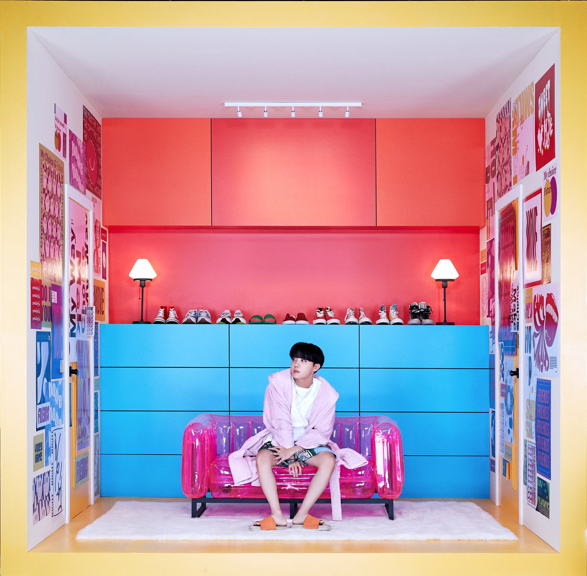

B T S



ABOUT BTS
2013년 데뷔해 국내외 신인상을 휩쓴 방탄소년단은 명실상부 한국을 대표하는 최정상 보이 그룹으로 성장했다. 현재는 아시아를 넘어 북미, 유럽, 남미, 중동에 이르기까지 전 세계 방탄소년단 열풍을 일으키며 글로벌 슈퍼스타로 우뚝 섰다. 미국 빌보드, 영국 오피셜 차트, 일본 오리콘, 아이튠즈, 스포티파이, 애플뮤직 등 세계 유수의 차트에서 기록한 성적이 이를 증명하고 있으며 음반 판매량, 뮤직비디오 조회수, SNS 지수 등에서도 독보적인 수치를 기록 중이다. 또한, 스타디움 투어를 개최하며 전 세계 콘서트 시장에서도 글로벌 아티스트로서의 면모를 이어가고 있으며, UN 연설 및 LOVE MYSELF 캠페인 등을 통해 선한 영향력을 실천하고 있다. 최근 ‘제62회 그래미 어워즈’에서 한국 가수 최초로 공연을 펼치면서 ‘빌보드 뮤직 어워즈’와 ‘아메리칸 뮤직 어워즈’, ‘그래미 어워즈’까지 미국 3대 음악 시상식을 석권하는 신기록을 세웠다.
M E M B E R

김남준(RM/Kim Namjun)
생년월일: 1994.09.12
- 신체: 181cm, A형
- 취미: 산책, 자전거타기, 전시회 및 박물관 가기, 독서, 미술 작품감상
- 특징: IQ148로 BTS의 브레인이자 리더. 그러나 이와 동시에 모든 것을 파괴시키는 파괴몬이자 방탄소년탄 댄스 양날개의 일부분을 맡고 있다.
김석진(JIN/Kim Seokjin)
생년월일: 1992.12.04
- 신체: 178cm, O형
- 취미: 'RJ'인형 수집, 피아노 연주, 요리, 메이플스토리하기, 낚시
- 특징: World Wide Handsome으로 자칭, 타칭 BTS의 비주얼 담당. (심지어 어깨깡패) 그러나 RM과 함께 양날개를 맡고 있으며 맏형이지만 맏내라는 별경을 얻을 정도로 촐싹거림의 대명사.
정호석(J-HOPE/Jeong Hoseok)
생년월일: 1994.02.18
- 신체: 177cm, A형
- 취미: 스트릿댄스, 프리스타일댄스, 비트박스, 정리정돈, 테니스
- 특징: BTS 희망의 아이콘이자 메인댄서. 최고의 댄서하면 바로 제이홉이라는 이름이 나올 정도로 존경받는 BTS의 '안무팀장'. 그리고 애교하면 바로 생각나는 후천적 애교의 소유자.
박지민(Jimin/Park Jimin)
생년월일: 1995.10.13
- 신체: 174cm, A형
- 취미: 춤, 노래, 팝핀, 현대무용, 마샬 아츠
- 특징: 넓은 음역대의 여운을 남기는 특유의 음색을 가지고 있으며 현대무용 덕분에 섬세한 감정표현과 부드러운 춤선의 소유자.
김태형(V/Kim Taehyung)
생년월일: 1995.12.30
- 신체: 179cm, AB형
- 취미: 사진찍기, 음악듣기, 미술관 다니기, 생각나는 것들 메모하기
- 특징: 중저음의 보컬을 담당하고 있찌만 싸이퍼에 대한 로망이 많아 "Cypher pt.3"를 커버하기도 했다. 뚜렷한 이목구비로 비주얼을 담당하며 말주변이 없어 태태어를 많이 만들어낸다.